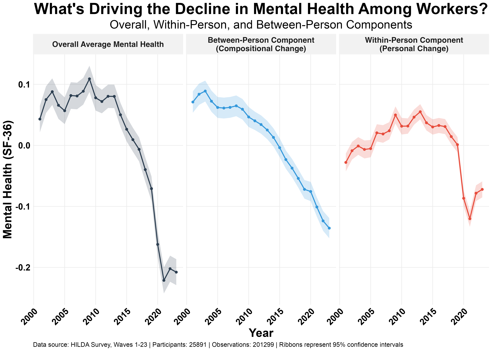

Mental health among Australian workers has declined steadily over the past decade. The data in the left-hand panel of the figure below shows the average mental health (as measured by the SF36) across the working population using data from the HILDA survey, which has tracked over 23,000 workers from 2001–2023.
This decline is about 0.3 standard deviations. But for context, job loss — one of the most disruptive life events — typically reduces mental health by an average of about 0.05 SD in this dataset. The decline over the last decade is roughly six times that.
But what's actually driving this decline? Is it that individuals are getting worse? Or is the workforce itself changing?
I decomposed this trend into two components:
1) A "within-person" trend: Are individuals experiencing genuine personal declines in mental health over time?
2) A "compositional" change: Is the workforce itself changing? Perhaps newer generations entering with worse baseline mental health than those retiring?
Turns out both mechanisms are at play.

Compositional decline has been steady since 2001 (see middle panel). This effect isn't about people getting worse from year-to-year. It's about who's in the workforce. The compositional decline suggests that since 2001, the people entering the workforce have had lower baseline mental health than those leaving it.
Individual decline from 2013 to 2021 (see right-hand panel). This is genuine personal deterioration. The same people, tracked over time, reporting worse mental health than they did years earlier. Until around 2013, individuals were actually improving slightly, which masked the compositional decline. But from 2013 to 2021, both forces were pulling in the same direction.
A rebound in recent years. The data also suggest that worker mental health has improved since hitting its lowest point in 2021. However, the compositional decline continues unabated.
So worker mental health has been eroding from two directions simultaneously since well before COVID, though COVID accelerated the deterioration. And this shift, across a population of over 10 million working adults, equates to thousands of vulnerable people crossing clinical thresholds.
There are signs that the within-person decline may be reversing, but the compositional shift shows no signs of slowing.
Three questions I have:
- What's driving the compositional change? Cohort effects (younger workers arriving with worse mental health)? Or are the types of workplaces that these new workers are entering perhaps less supportive of mental health?
- What's been happening since around 2013 that perpetuated the within-person decline?
- What's responsible for the recent improvement? Is this just a rebound effect from COVID or will it lead to continued positive change?